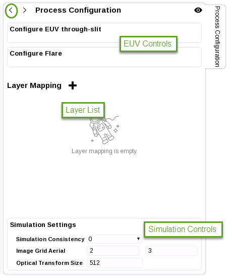
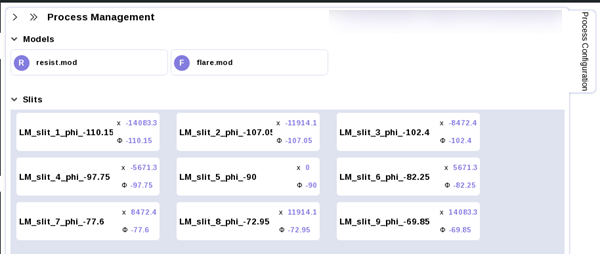
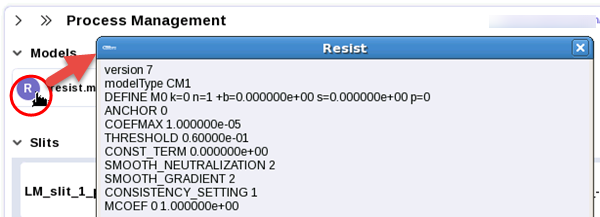
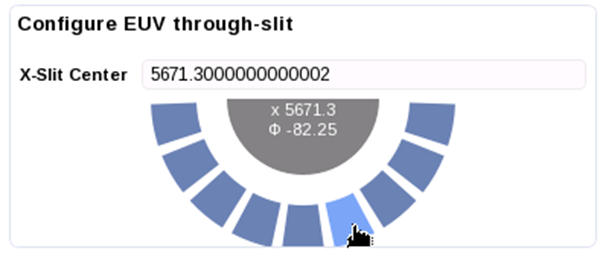
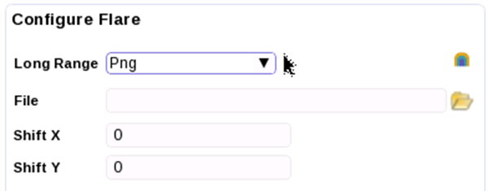
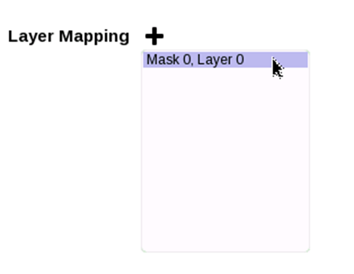
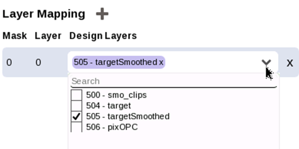

When loading a litho model, the LM simulation
session requires you to map layers and set up your simulation parameters
in the Process Configuration section on the right side of the RFT v2.0
GUI. The available parameters depend on the type of model that was
loaded.
Figure 1. Litho
Model Process Configuration Panel
Procedure
- For litho
models, the model configuration is done automatically when you load
a litho model; the Process Model Configuration section is mostly
present for viewing the model contents.
Clicking
the arrow on the left (<) opens a flyout panel (Process Management)
where you can view the process model contents and set the design
layer used for the mask; however, this action is more easily performed
in the Layer Mapping List.
Note: The Mask panel that lets you set the design
layer for EUV models only appears if you click one of the Slits
listings; setting the design layer in the Mask panel sets the layer
for all slits.
Figure 2. LM Process
Management View (EUV Shown)
Clicking the arrow on the left (>) of this flyout panel returns
to the Process Configuration mode.
Clicking the
eye symbol on the right displays the process model contents in a
more compact format. Clicking the X in the upper right of compact
display mode returns to the Layer Mapping List view.
Note: Certain icons in the expanded views (the R in
the resist model line, the F in the flare model
line, and the various defocus models) can be selected. Click a model
button to open up a window showing the model definition file.
Figure 3. Example:
Resist Model Content Review
- If your
litho model is EUV, the two EUV / GLM control bars (Configure
EUV through-slit and Configure Flare)
are visible. Hovering over the bar expands the control.
Note: DUV models do not feature these
control bars; non-EUV users can skip to step 3.
Configure EUV through-slit —
Optional. Changes the X-slit Center setting.
While you can enter a value manually in the X-Slit Center field,
clicking the dark blue half-circle opens a selection wheel; hovering
the cursor over each choice displays the x and phi setting for that
slit. Clicking a button sets the selected X and phi to be the new
center slit.
Figure 4. Expanded
Configure EUV through-slit Panel
Configure Flare —
Optional. Sets the flare model type and any additional information
needed.
Figure 5. Expanded
Configure Flare Panel
Changing the Long Range type changes the controls in the panel.
None —
Ignores the flare model for process window conditions.
PNG —
Enables the use of a flare map file with X and Y offsets. This type
also adds a flare map simulation button to the panel.
Constant —
Enables setting a constant flare value.
- Map your
design layers in the Layer Mapping List.
- Click
the Layer Mapping + button, then choose from the list of the mask
and layer definitions in the loaded litho model.
Figure 6. Select
Mask/Layer Pair
- In the
entry that appears, map the mask/layer pair to the correct design
layer (this should be the simulation layer).

Note: You must specify at least one
layer mapping for print image operations. You can map multiple layers
for “Mask 0 Layer 0.”
- (Optional)
Modify the Simulation Settings. These are the simulation settings
the Calibre OPCverify engine uses.
Note: Changing these settings is recommended
for advanced users only.
Simulation
Consistency can be set to 0, 1, 2, or euv. The default
value is 0. If you set a value other than 0, Calibre WORKbench uses
its own internal values and ignores the Image Grid Aerial and Optical
Transform Size settings.
Table 1. Simulation
Consistency Non-Zero Setting Overrides
Value
|
Image Grid
Aerial Setting
|
Optical Transform
Size Setting
|
0 (default)
|
|
|
1 (improves
output consistency)
|
3 8
|
384
|
2 (faster
simulation time)
|
1 2
|
512
|
euv
|
1 1
|
1024
|
The Image
Grid Aerial parameter specifies the numerator and denominator
values for the resist computation grid as the upsampling factor
relative to the Nyquist grid. For the EUV process, the default values
are 2 for the numerator and 3 for the denominator. For the DUV process,
the default values are 3 for the numerator and 8 for the denominator.
The Optical
Transform Size default value is 512 for the EUV process,
and 768 for the DUV process. It is used to specify the number of
Nyquist simulation pixels in each simulation frame.
Results
Changes to the Process Configuration panels are applied immediately.
The new settings are used the next time you perform any tool operation.